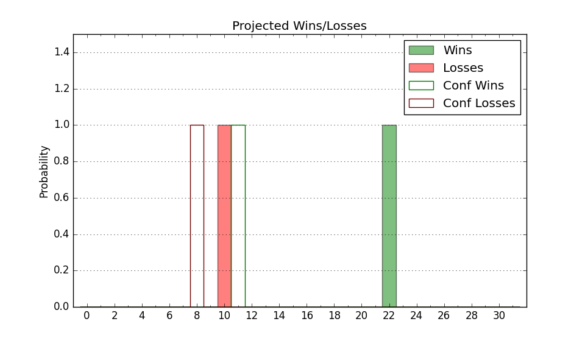

| Home | Game Probabilities | Conferences | Preseason Predictions | Odds Charts | NCAA Tournament |
| City: | Fairfax, Virginia | |
| Conference: | Atlantic 10 (7th)
| |
| Record: | 9-9 (Conf) 19-12 (Overall) | |
| Ratings: | Comp.: 9.6 (93rd) Net: 9.6 (93rd) Off: 110.2 (98th) Def: 100.6 (94th) SoR: 0.8 (100th) |
| Remaining | ||||||
|---|---|---|---|---|---|---|
| Date | Opponent | Win Prob | Pred. | |||
| Previous | Game Score | |||||
| Date | Opponent | Win Prob | Result | Off | Def | Net |
| 11/6 | Monmouth (189) | 85.9% | W 72-61 | -9.4 | 12.6 | 3.2 |
| 11/10 | Austin Peay (213) | 88.0% | W 67-45 | -17.6 | 28.4 | 10.8 |
| 11/15 | Cornell (100) | 68.0% | W 90-83 | 13.2 | -11.8 | 1.4 |
| 11/19 | (N) Charlotte (116) | 60.0% | L 49-54 | -29.6 | 12.0 | -17.7 |
| 11/20 | (N) South Dakota St. (133) | 64.9% | W 73-71 | 5.4 | -3.6 | 1.8 |
| 11/25 | East Carolina (188) | 85.8% | W 81-59 | 21.4 | 2.4 | 23.8 |
| 11/29 | NJIT (334) | 96.6% | W 86-68 | 2.6 | -8.8 | -6.2 |
| 12/2 | @Toledo (148) | 52.8% | W 86-77 | 12.2 | -3.2 | 9.0 |
| 12/5 | @Tennessee (6) | 7.9% | L 66-87 | 3.1 | -3.4 | -0.4 |
| 12/16 | Loyola MD (348) | 97.6% | W 62-54 | -16.3 | -2.0 | -18.3 |
| 12/22 | @Tulane (122) | 46.2% | W 69-66 | -10.2 | 16.1 | 5.8 |
| 12/30 | North Carolina A&T (344) | 97.3% | W 94-69 | 10.6 | -12.4 | -1.8 |
| 1/3 | @La Salle (207) | 67.0% | W 77-62 | 9.4 | 10.0 | 19.4 |
| 1/6 | Saint Louis (186) | 85.7% | W 79-67 | 11.3 | 2.1 | 13.4 |
| 1/9 | VCU (71) | 57.8% | L 50-54 | -22.6 | 11.0 | -11.6 |
| 1/13 | @Richmond (80) | 31.2% | L 70-77 | 12.4 | -17.3 | -4.9 |
| 1/15 | @George Washington (181) | 63.0% | L 62-75 | -25.2 | -2.2 | -27.4 |
| 1/20 | St. Bonaventure (84) | 62.1% | W 69-60 | -2.7 | 12.0 | 9.3 |
| 1/27 | Rhode Island (212) | 88.0% | W 92-84 | 22.4 | -28.3 | -5.9 |
| 1/31 | @Saint Joseph's (86) | 34.0% | L 73-75 | 6.3 | -5.0 | 1.4 |
| 2/3 | @Massachusetts (87) | 34.4% | L 65-66 | -2.7 | 6.4 | 3.7 |
| 2/7 | Loyola Chicago (97) | 66.3% | L 79-85 | 18.8 | -31.2 | -12.3 |
| 2/10 | @Davidson (125) | 46.5% | W 57-55 | -5.7 | 10.2 | 4.5 |
| 2/13 | George Washington (181) | 85.3% | W 90-67 | 17.7 | -1.6 | 16.2 |
| 2/21 | Dayton (22) | 36.9% | W 71-67 | 16.1 | -0.9 | 15.1 |
| 2/24 | @Loyola Chicago (97) | 36.6% | L 59-80 | -8.8 | -22.4 | -31.2 |
| 2/27 | @Fordham (170) | 59.4% | L 60-61 | -4.3 | -1.9 | -6.2 |
| 3/2 | Duquesne (98) | 66.5% | L 51-59 | -24.0 | 3.2 | -20.8 |
| 3/6 | @Rhode Island (212) | 68.2% | W 69-51 | 1.2 | 22.4 | 23.6 |
| 3/9 | Richmond (80) | 60.7% | W 64-46 | 3.9 | 20.3 | 24.2 |
| 3/13 | (N) Saint Joseph's (86) | 48.8% | L 57-64 | -12.3 | -3.1 | -15.4 |
| Stats & Trends | |||||
|---|---|---|---|---|---|
| Current | Day | Week | Month | Season | |
| Composite | 9.6 | -0.1 | +0.3 | -0.4 | +8.1 |
| Comp Rank | 93 | -1 | +1 | -4 | +50 |
| Net Efficiency | 9.6 | -0.1 | +0.3 | -0.6 | -- |
| Net Rank | 93 | -1 | +1 | -6 | -- |
| Off Efficiency | 110.2 | -0.0 | -0.1 | -1.3 | -- |
| Off Rank | 98 | +1 | -4 | -20 | -- |
| Def Efficiency | 100.6 | -0.1 | +0.4 | +0.8 | -- |
| Def Rank | 94 | -3 | +10 | +20 | -- |
| SoS Rank | 110 | -- | +7 | +30 | -- |
| Exp. Wins | 19.0 | -- | +0.4 | -0.4 | +2.6 |
| Exp. Conf Wins | 9.0 | -- | +0.4 | -0.4 | -0.2 |
| Conf Champ Prob | 0.0 | -- | -- | -- | -7.0 |

| Advanced Stats | ||
|---|---|---|
| Stat | Value | Rank |
| Off Eff FG % | 0.532 | 88 |
| Off Ast Ratio | 0.136 | 216 |
| Off ORB% | 0.304 | 97 |
| Off TO Rate | 0.157 | 249 |
| Off FT Ratio | 0.384 | 51 |
| Def Eff FG % | 0.465 | 51 |
| Def Ast Ratio | 0.129 | 79 |
| Def ORB% | 0.276 | 170 |
| Def TO Rate | 0.144 | 196 |
| Def FT Ratio | 0.304 | 133 |